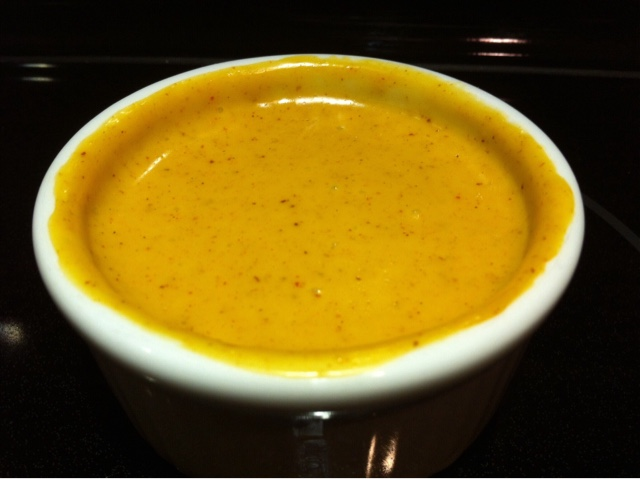

El Toro Cheese Dip

Smooth Queso.. with a twist!
El Toro cheese dip was a favorite in Florence, Alabama.
It's great with a big basket of tortilla chips or french fries.
Ingredients
- 1/4 tsp paprika
- 1/4 tsp garlic powder
- 1/4 tsp dried minced onion
- 1/2 tsp chili powder/li>
- 1/2 tsp red/cayenne pepper
- 3/4 tsp cumin
- 1 lb original Velveeta cheese
- 1 cup milk
Steps
- Mix together ingredients in a microwave safe bowl
- Microwave on high for 5 minutes, stopping every minute to stir
- Serve and enjoy!